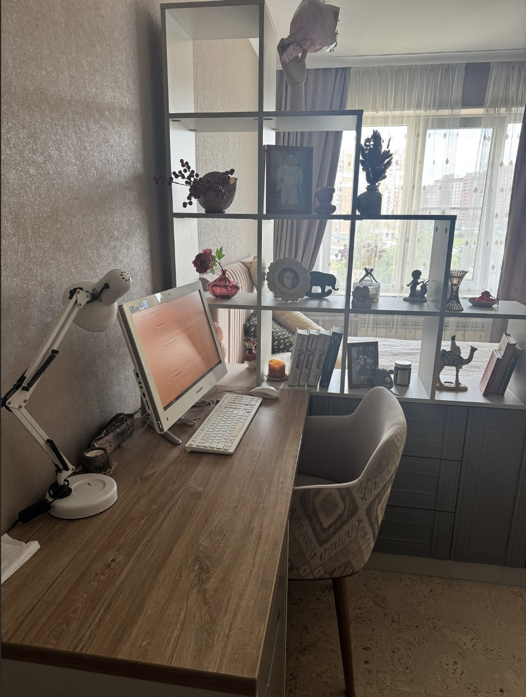
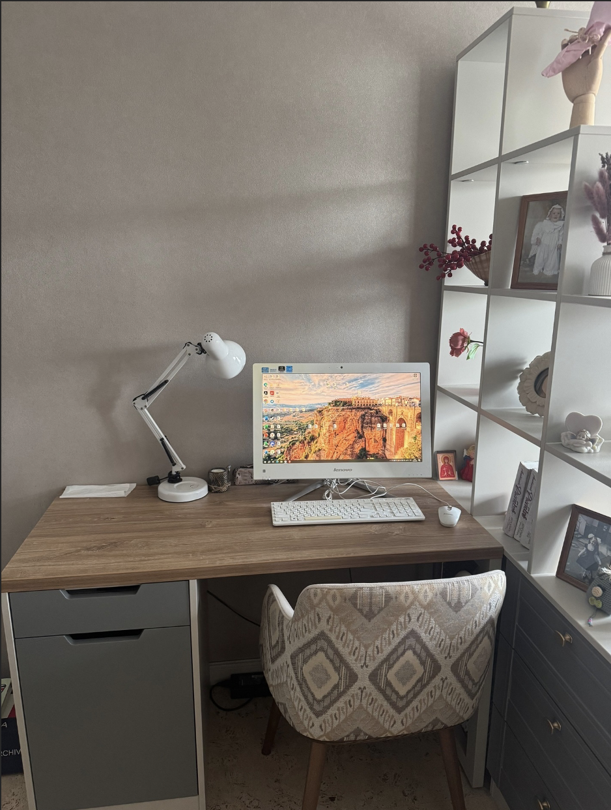

📋 Отчёт студента
Аудит рабочего пространства и проект улучшения
Заполните поля ниже. Все данные сохраняются в локальном хранилище браузера.
1. Общая информация
Назначение рабочего пространства
2. Итоги чек-листа
Результат
✅ Рабочее место организовано грамотно и соответствует задачам
3. Ключевые наблюдения
✅ Сильные стороны
⚠️ Проблемные зоны
🚀 Три улучшения с наибольшим эффектом
4. Проект улучшения
Что можно улучшить без существенных затрат
Что потребует бюджета, но даст заметный эффект
Обоснование проекта
5. Визуальные материалы
Фотографии рабочего места до и после улучшений.

📸 Фото stol1.jpg не найдено
Добавьте файл в папку '"/>
Рис. 1 — Рабочее место до улучшений

📸 Фото stol2.jpg не найдено
Добавьте файл в папку '"/>
Рис. 2 — Рабочее место после улучшений